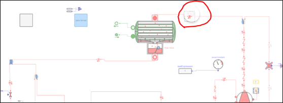

MV4 MBD Installation Guidance¶
1. Install Bolt platform and libraries:¶
This step help user to install official IPM Bolt with libraries, BOLT office asks 50GB free space on hard driver, after our test, about 10GB is OK, depends on future
a. Uninstall IPM Bolt and IPM Bolt library if there is a previous version.
b. Check free space on hard driver: Bolt office asks 50GB free space on hard driver, after our test, 10GB is OK, but depends on following simulation activities performed;
c. Copy install package to local PC, link: \\172.24.236.60\srdc\Large_Chiller\29-Tools(ZXJ)\Bolt
d. Install IPMBOLT and Bolt libraries in sequence, by clicking “setup.exe”.
2. Update license files:¶
Due to Bolt development, internet situation and corporation policy change, original license package is not available, below steps provide an updated license solution.
a. Replace “com.modelon.impact.editing-server.jar” under C:\IPMBOLT\Platform\editing-server
with the one in \\172.24.236.60\srdc\Large_Chiller\29-Tools(ZXJ)\Bolt\IPMBOLT_v2.2.92.0_Patch
There will be an error message if not update:

b. Replace “assets.zip” under C:\IPMBOLT\Platform\editing-server\jsRoot with the one in \172.24.236.60\srdc\Large_Chiller\29-Tools(ZXJ)\Bolt\IPMBOLT_v2.2.92.0_Patch
c. Copy “BOLT1_USER_CLOUD_SERVER_LICENSE_80.lic” under \172.24.236.60\srdc\Large_Chiller\29-Tools(ZXJ)\Bolt\IPMBOLT_v2.2.92.0_Patch to
C:\Users\zhux2\AppData\Roaming\Modelon\Licenses\Server (Change “zhux2” to your own user name), otherwise there is a certification error:

3. Update MV4 workspace and library¶
This step provides MV series models and supported libraries for MV4 concept design.
a. Delete all contents under “C:\Users\zhux2\impact\libraries”(You may update the user to your account name);
b. Open this link to access library, link: \172.28.203.10\srdc\Temp\ZhuXJ
c. Copy folder “Polaris” to “C:\Users\zhux2\impact\workspaces”; if conflict, change original folder “Polaris” to another name;
d. Copy folders with below names to “C:\Users\zhux2\impact\libraries”: “BOLT 1.24.0”；“Private_database 1.24.1”；“Public_database 1.24.0”；“RRBP_BlackBoxLibrary 1.24.0
4. Enable Desktop Version BOLT Simulation¶
a. Open “Bolt” by clicking desktop shortcut, and choose “Polaris” project;
b. In the left bar(Click triangle button to display if not shown), choose “System 19MV”-“Lumped”;
c. Open the model you want to simulate by double-click;

d. Change default unit: Click setting button in top right in the popup dialogue, choose “Units” tag switch “Display Units” from SI to imperial Choose “F” from dropdown list for “K”, choose “in” from dropdown list for “m” “Save” to close this window
e. Right click triangle button in the right side, first choose “Bolt Steady State”, click triangle button to enable simulation;
f. Judge successful simulation by: (1) f1: There is orange background shown under “result”; (2) Open the right bar, results are shown under simulations category without cross symbol in front of “Result”;
(3) Click any refrigerant node, -> click sticky eye -> click the triangle button to show node details -> Make sure there are result in “Value” column;
If no result in “Value”, need check free space in hard disk, make sure 5GB is reserved.
